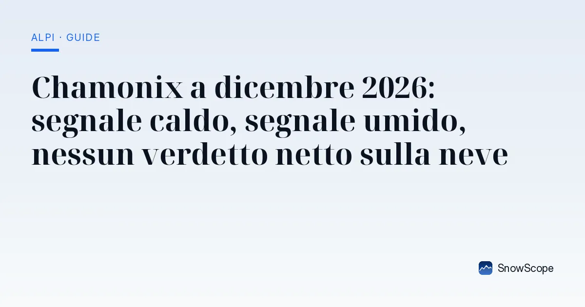
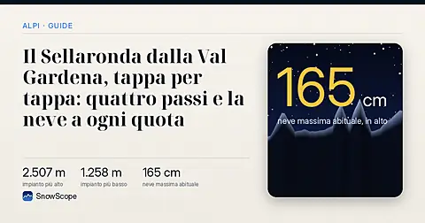

Chamonix a dicembre 2026: segnale caldo, segnale umido, nessun verdetto netto sulla neve
Le cime superiori di Chamonix si sono svegliate con 27 cm il 10 novembre, eppure la stazione di mezza montagna ha solo 1 cm e la base è nuda. La previsione stagionale per dicembre tende verso il caldo e leggermente bagnato, ma questi due fattori si compensano quasi a vicenda—il mese dovrebbe rimanere vicino al totale di neve solito.
Le previsioni neve in tempo reale per Chamonix nell'app SnowScopeAltezza neve, allerte powder e mappa 3D, gratis.

L'altitudine decide il quadro ora
La neve di inizio novembre si attacca solo dove è freddo. Il Grands Montets in cima a 2.768 m ha 27 cm dopo che 15 cm sono caduti la settimana precedente. Scendi 800 metri alla mezza montagna (2.001 m) e trovi solo 1 cm, nonostante 10 cm siano arrivati negli stessi sette giorni. La base a 1.234 m non mostra nulla.
Questa è la storia di un'isoterma della neve alta. Sulla mappa SnowScope, il 47 per cento della finestra di 60 km attorno a Chamonix è bianco—il massiccio del Monte Bianco e il versante alto del Vallese—ma le valli rimangono nude. I prossimi sette giorni potrebbero spingere altri 26 cm nella zona alta e 5 cm alla mezza montagna.
Nessun pattern chiaro in montagna ancora
Quando SnowScope confronta ogni zona montuosa con i suoi ultimi 24 dicembre, la maggior parte delle aree attorno al Monte Bianco non mostra un segnale forte. L'86 per cento del terreno manca di un trend chiaro. Il 14 per cento tende verso il magro (principalmente Prealpi basse vicino ad Annecy), e nulla spicca come naturalmente più nevoso.
A quota mezza montagna, la probabilità di più neve fresca rispetto a un dicembre tipico è il 45 per cento. Un dicembre normale porta 68 cm di neve nuova lì; la prospettiva di quest'anno suggerisce 66 cm. Al 31 dicembre, la profondità tipica è 92 cm e la profondità prevista 85 cm, con maggiore probabilità tra 71 e 103 cm.

Caldo e umidità in un conflitto di forze
Le 51 corse del sistema stagionale europeo concordano fortemente su una cosa: dicembre sarà caldo. Il riscaldamento medio nella regione è 1,6 °C sopra la norma, con l'84 per cento delle corse più calde. La precipitazione è l'11 per cento più bagnata rispetto ai soliti 128 mm, favorita dal 65 per cento dell'insieme.
Questi segnali tirano in direzioni diverse. L'alta quota mantiene la precipitazione come neve; le quote più basse pagano il prezzo di un mese più caldo sotto forma di pioggia e un'isoterma della neve in salita. Nei passati 45 dicembre di Chamonix, la profondità della neve qui ha seguito la precipitazione molto più da vicino (correlazione 0,94) rispetto alla temperatura, e per questo la previsione si attesta vicino alla norma—i due effetti si annullano per lo più.


Tre dicembre che si sono sentiti così
I tre passati dicembre il cui tempo ha corrisposto più da vicino a questa previsione sono il 2002, il 2022 e il 2014. Eppure questi tre non erano uguali per la neve. Questa onestà è importante: la previsione inclina leggermente le probabilità; non blocca l'esito del mese.
La lezione chiave è la variabilità. Gli anni caldi non sempre significano neve magra una volta conteggiata l'umidità. Pianifica prima il terreno alto—la cima del Grands Montets e gli approcci ai ghiacciai—e tratta le piste più basse come un bonus. Consulta la previsione a 7 giorni prima di decidere un viaggio.

Cosa osservare nelle prossime settimane
L'inizio dicembre pende in equilibrio. La copertura sottile alla mezza montagna potrebbe consolidarsi, o il caldo di dicembre potrebbe spingere l'isoterma della pioggia più alta. La differenza tra un buon mese e uno magro potrebbe dipendere da se dicembre tende più verso il caldo o verso l'umidità nella sua prima quindicina.
Usa la mappa SnowScope per tracciare l'isoterma della neve mentre la previsione a 7 giorni si evolve. Questo strato ti dirà più di quale pista delle valli è sciabile di quanto qualsiasi previsione stagionale singola possa fare.
Consigli per sciatori
- Inizia le tue giornate di dicembre sul Grands Montets in cima e il terreno dei ghiacciai; l'alta quota blocca le migliori probabilità di neve.
- Osserva da vicino la previsione a 7 giorni per spostamenti dell'isoterma della pioggia. Un periodo caldo a metà mese potrebbe spingere la pioggia più alta e restringere la copertura della mezza montagna.
- La prospettiva spazia da 71 a 103 cm entro fine mese alla mezza montagna; usa il fondo di quella gamma per pianificare in modo conservatore all'inizio, il top mentre si sviluppa.
- Prima di prenotare fine dicembre, confronta la previsione a 7 giorni a quel momento con questa vista stagionale. Le previsioni stagionali sono guide, non garanzie.
- Stratifica la mappa della profondità della neve SnowScope ogni settimana per vedere dove l'isoterma della neve si assesta mentre dicembre progredisce.
Su questi numeri
Le altezze neve delle località sono la neve più alta sui pendii superiori alla data indicata; sono stime per un'area, non una misura in un punto. Le previsioni possono cambiare. Leggi sempre il bollettino valanghe ufficiale prima del fuoripista.
Cita questo articolo
Per ricerca, didattica o stampa: numeri e grafici sono liberamente riutilizzabili con licenza CC BY 4.0 citando così.
SnowScope (2026), Chamonix a dicembre 2026: segnale caldo, segnale umido, nessun verdetto netto sulla neve, https://snowscope.app/blog/it/2026/11/chamonix-december-2026-snow-outlook.html, consultato il 2026-11-10
SnowScope (Atlas Labs). (2026, November 10). Chamonix a dicembre 2026: segnale caldo, segnale umido, nessun verdetto netto sulla neve. SnowScope snow reports. https://snowscope.app/blog/it/2026/11/chamonix-december-2026-snow-outlook.html
BibTeX
@misc{snowscope2026chamonixdecember2026snow,
author = {{SnowScope (Atlas Labs)}},
title = {Chamonix a dicembre 2026: segnale caldo, segnale umido, nessun verdetto netto sulla neve},
year = {2026},
month = nov,
howpublished = {\url{https://snowscope.app/blog/it/2026/11/chamonix-december-2026-snow-outlook.html}},
note = {Published 2026-11-10 09:29 UTC; accessed 2026-11-10}
}· CC BY 4.0 · Metodi, dati e strumenti →
Segui Chamonix
Gratis: un messaggio quando arriva la neve e il meteo ogni mattina.
Altri bollettini neve

Quando prenotare Courchevel e le 3 Vallées, quale paese scegliere e dove la neve resiste, da 46 inverni passati.

Bonneval-sur-Arc si trova a 1.794 m nella valle dell'Arc, chiusa dal Col dell'Iseran in inverno. Lo spessore di neve varia da 99 cm in basso a 335 cm in alto. Dati da 46 inverni passati, novembre 2026.

Il Sellaronda da Selva (Sëlva) in Val Gardena: passi Gardena, Campolongo, Pordoi e Sella in ordine, con il nostro storico neve di 46 inverni passati.